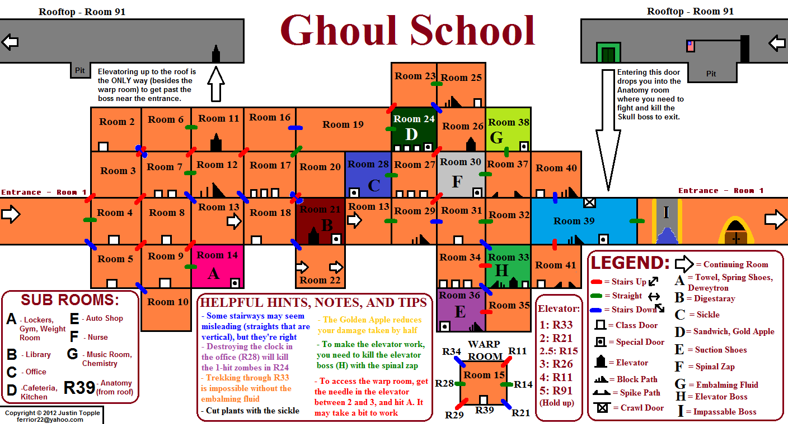

Ghoul School (NES)
 By
ikki5
By
ikki5
ALERT!
This guide contains spoilers!
1) Synopsis
- Set Difficulty: 4/10
- Approximate time to Master: 2-3 hours
- Minimum Number of Playthroughs Needed: 2
- Number of Missable Achievements: 9
- Does Difficulty Affect Achievements?: N/A
2) Introduction
Ghoul School is an action game where you are this kid who is trying to save a girl who has been captured. The setting is a school and you need to explore the school to get items and such to be able to get through and save her. It can be a bit frustrating with some of the enemies and the movement can be a bit wonky. This set has a total of 25 achievements worth of total of 300 points.
3) Walkthrough
Step 1
Really, in this step, I would suggest going for almost everything on your first play through. However, if you are not familiar with the game or the layout of the school, then two playthroughs might be a good idea for you, especially so you can map everything out if you don’t already use a map from somewhere else. So what I recommend to get first if you plan to play more than once are as follows.
- Breaking a Sweat
- Feed Me!
- What Gun?
- Better Than Laxatives
- Don’t Forget The Preservatives.
- Conqueror of Death
- Good for the Spine
- Why Go Under When You Can Go Over?
- I Can Bounce
- Who’s Keeping Score Anyway?
- No Need To Keep Time Here
- The Power Of Love… Or Not
- Giant Snake
[MISSABLE] - Present From The TV
[MISSABLE] - Terrible Ventilation
Step 2
Once you are familiar with the game and have it mapped out, go back, and do everything else including the score achievements if you did not get them on your first play through. The only achievement I found you needed a second playthrough was for Medusa which will be explained below. I will also provide a map at the end of the entire guide for those who need help finding the rooms.
- Gamma Power!
[MISSABLE] - Clearing Out Some Ghouls
- Hard Cleaning
- Tick-a-tick-a-tick-a-tick-a-tick.
- Flawless
[MISSABLE] - Gigantic Eye? No Problem!
[MISSABLE] - Medusa
[MISSABLE] - Can’t Miss Any Classes
[MISSABLE] - School is Not All Classes and Hallways!
[MISSABLE] - Skipping Class!
[MISSABLE]
4) Achievements
 Breaking a Sweat
Breaking a Sweat
Acquire the towel.
The Towel is in the locker rooms, Room 92.
 Feed Me!
Feed Me!
Acquire the Sandwich
The Sandwich is a long ranged weapon, it is in the cafeteria, room 101
 What Gun?
What Gun?
Acquire the Deweytron Gun.
The Deweytron Gun is shortly after getting the towel to be honest. Just keep going through the Gym, past the weight room and at the end, you’ll find the gun on the top ledge which you can climb up. It is in room 95.
 Better Than Laxatives
Better Than Laxatives
Acquire the Digestaray.
The Digestaray can be found in the Library, room 104
 Don’t Forget The Preservatives.
Don’t Forget The Preservatives.
Acquire the Embalm Fluid.
Make your way to the Chemistry Labs, Room 105, you will find the Embalm Fluid on the shelves at the end.
 Conqueror of Death
Conqueror of Death
Defeat Death and acquire the Sickle.
Death is found in the offices; Room 98 I recommend using the Digestaray to defeat him. When you do, pickup the new sickle that has dropped.
 Good for the Spine
Good for the Spine
Acquire the Spinal Zap.
The Spinal Zap is in the Nurses Office, Room 96. Be careful of the ghouls that throw their heads at you, the Deweytron is an effective weapon here. Once you get to the end, it will be sitting there on the shelf.
 Why Go Under When You Can Go Over?
Why Go Under When You Can Go Over?
Acquire the Suction Cups shoes.
The Suction Cups are in the Auto shop, Room 107. Place is kind of annoying, watch out for the monkeys throwing wrenches. Just make it to the end and grab them off the ledge.
 I Can Bounce
I Can Bounce
Acquire the Spring Shoes.
This one is also really to the gym. After getting the towel, keep going left, past the gym and you will be in the weight room, Room 943. Here you will find them on one of the workout devices, be sure not to miss them as they kind of blend in and look like springs. When you drop down, you might need to move a little more to the side to fall a bit more, then walk over.
 Who’s Keeping Score Anyway?
Who’s Keeping Score Anyway?
Smash the Score Board.
This one is right after you get the towel, keep going left, enter the Gym, Room 93, jump up and smack the scoreboard with your new found towel.
 No Need To Keep Time Here
No Need To Keep Time Here
Smash the clock in the Office.
This one is also in the office, in the room before you fight death, Room 99. Either when you are leaving or entering, there is a clock. Jump and smash it with your bat.
 The Power Of Love… Or Not
The Power Of Love… Or Not
Beat the final boss and exit the school with your ‘girlfriend.’
This one cannot be missed; beat the game and you get this.
 Giant Snake
Giant Snake
[MISSABLE]
Kill the Giant Snake in the Basement (Room 112).
This is room specific, get the room 112, in the area close to the final boss, and kill the snake. While this is missable, I did place it in step 1 because it is easy to get to on a normal play through.
 Present From The TV
Present From The TV
[MISSABLE]
Smash the TV in Room 052 for some goodies.
Again, even though technically missable, this was placed in step 1 because it is easy to get on a first play through. Room 52 is one of the classrooms very close to the start of the game. Go into the room, find the TV at the end, hit it with your bat.
 Terrible Ventilation
Terrible Ventilation
Make it through the vents.
This cannot be missed; you need to get through the vents to get through the game.
 Gamma Power!
Gamma Power!
[MISSABLE]
Acquire the Gamma Gun.
This one can be easily missed. The Gamma gun is in the vents and if you leave, it can be hard to get back. Refer to this map to lead you to the Gamma Gun.
Gamefaqs Air Ducts Map
 Clearing Out Some Ghouls
Clearing Out Some Ghouls
Get 5,000 points.
Refer to Tick-a-tick-a-tick-a-tick-a-tick.
 Hard Cleaning
Hard Cleaning
Get 10,000 points.
Refer to Tick-a-tick-a-tick-a-tick-a-tick.
 Tick-a-tick-a-tick-a-tick-a-tick.
Tick-a-tick-a-tick-a-tick-a-tick.
Get 20,000 points.
Pretty simple, kill things, break stuff, get stuff, get points. If you are nearing the end and are worried you do not have enough points. The final boss does give you a lot but if you are not sure, grind it out, enemies will respawn.
 Flawless
Flawless
[MISSABLE]
Beat the game with out dying.
Plain and simple, do not die in your whole run of the game. If you tread carefully, you should be fine. There are some sections that are harder in the halls, if you can, sometimes the suction shoes will help a lot.
 Gigantic Eye? No Problem!
Gigantic Eye? No Problem!
[MISSABLE]
Beat the final boss with 50% hp or more.
This can be a little tricky, learn his pattern and you should have no problem. The sickle is a very effective weapon but risky, watch out for his shots and hit when you can. He moves back and forth and fires laser from his eye.
 Medusa
Medusa
[MISSABLE]
Kill Medusa
This one is the only achievement I can see needing a second playthrough. Either that or I cannot figure out how to go back after getting the Gamma Gun because the only way to kill Medusa, is to use the Gamma Gun from the Air Ducts. So, to do this, you essentially need to get the Gamma Gun, then kill yourself to get the game over because if you get a game over, you keep your weapons. So, when you get a game over, at the start, go left, you will find Medusa. Kill her with the gun and if you want, you can keep going to give you a shortcut because to the end game.
 Can’t Miss Any Classes
Can’t Miss Any Classes
[MISSABLE]
Explore All Classrooms
This one is a bit of a grind. You need to find all the classrooms and enter them. All you need to do is enter so go in and leave and move to the next one. If you need help, refer to the map at the end of the guide for some help.
 School is Not All Classes and Hallways!
School is Not All Classes and Hallways!
[MISSABLE]
Explore all special rooms (Gym, Cafeteria, Office, etc.)
Similar to the Classrooms but this time it is the other rooms. Again, if you need help, refer to the map at the end of the guide for some help.
 School is Not All Classes and Hallways!
School is Not All Classes and Hallways!
[MISSABLE]
Explore All hallways, the basement vents, etc.)
Similar to the last two. Explore everything, this one can be annoying because you have the vents and the basement but just remember the basement can go in a full circle. And of course, if you need help, here is a map you can refer too:
5) Map
Here’s a map taken from gamefaqs.

Original URL:
https://gamefaqs.gamespot.com/nes/587304-ghoul-school/map/11221-school-map